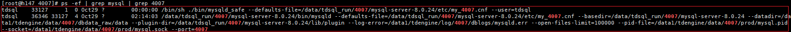

Procedure
- Use PuTTY to log in to the TDSQL data node as user root.
- Run the following command to check whether the mysql service has been installed:
ps -ef | grep mysql | grep Instance port

Replace Instance port with the actual value obtained from the DB monitoring page after selecting an instance on the Instance management page of the TDSQL CHITU management console.
Example:
ps -ef | grep mysql | grep 4007
If information similar to the following is displayed, the mysql service has been installed. Otherwise, the mysql service is not installed.
